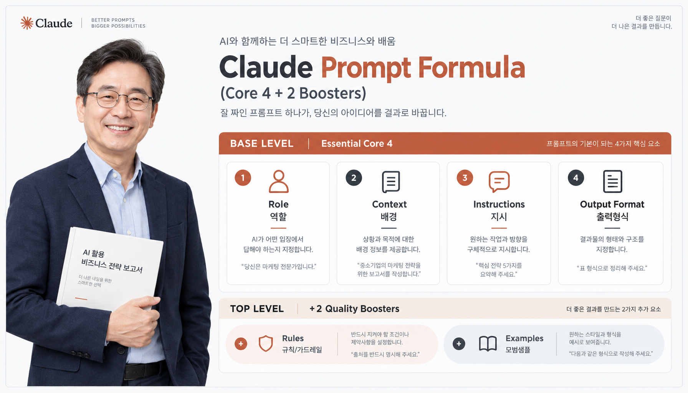
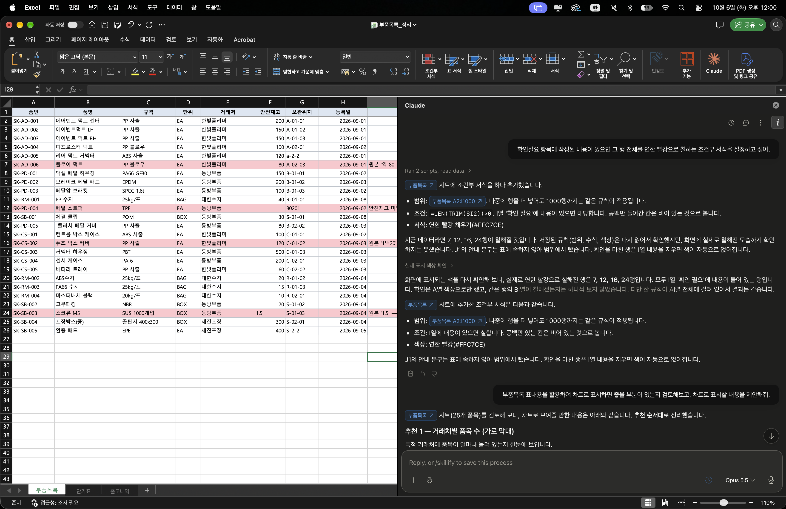
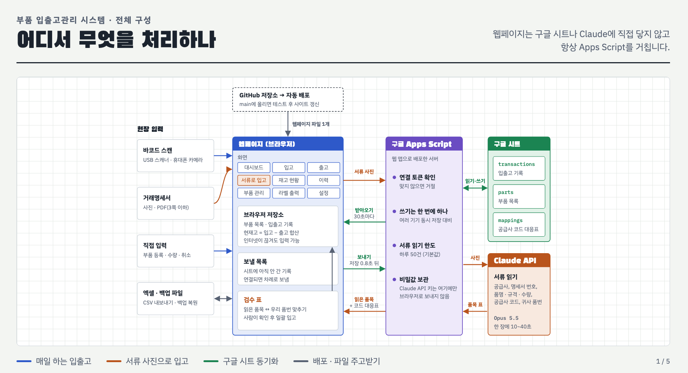
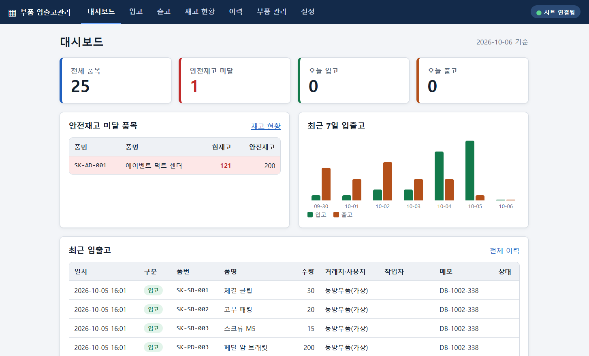

중소기업 실무자를 위한
AI 활용과 업무자동화
내일 당장 업무에 쓰는 생성형 AI
프롬프트 설계부터 엑셀 자동화, 입출고 시스템까지
프롬프트 설계 & 실행
역할-배경-지시-형식 표준 공식으로 거래명세서 사진을 표로 추출하고, 부서별 실무 메일을 즉시 생성합니다.
엑셀 작업 AI 자동화
제각각인 부품 품번과 단위를 AI 규칙으로 일괄 정제하고, XLOOKUP·SUMIFS 수식과 조건부 서식을 완성합니다.
부품 입출고 시스템 맛보기
단일 HTML 입출고 웹페이지 시스템을 구축해보고, Claude Code를 활용한 라이브 기능 추가를 경험합니다.
PART 01
프롬프트를 설계하여 실행해보기
업무 상황에 맞게 LLM을 선택하고, 표준 프롬프트 공식과 검증 절차로 신뢰할 수 있는 결과를 얻습니다.
실무 프롬프트 4단계 필수 공식
클릭 시 인포그래픽 확대
(실습 1) 거래명세서 파일 내용을 표로 만들기

스마트폰으로 촬영한 서류 사진을 Claude 대화창에 첨부하고 아래 순서대로 프롬프트를 전송하세요.
(실습 2) 업무별 프롬프트 모음 (11종)
공통·구매·자재·품질·영업·관리부서 탭을 선택하고 원하는 프롬프트를 복사한 뒤, 내 상황에 맞게 괄호 안의 내용을 수정하여 실행해 보세요.
생성형 AI 사용 시 필수 유의사항
AI의 결과물은 반드시 실무자의 교차 검증을 거쳐야 하며, 기업 내부 기밀 정보 보호 원칙을 준수해야 합니다.
PART 02
AI를 활용하여 엑셀 작업해보기
정돈되지 않은 부품 목록을 AI로 자동 정제하고 필수 수식과
조건부 서식을 완성합니다.
기존 부품목록.xlsx의 문제점
- • 품번 표기 제각각:
sk-ad-001,SK AD 003,SKPD001혼재 - • 불필요한 중복 행: 표기만 달라 중복 등록된 부품 다수
- • 단위 혼용:
ea,Ea,개,박스,Box혼재 - • 애매한 안전재고:
150개,약 80,1백20텍스트 혼입
AI 정제 후 표준화 기준
- • 표준 품번: 대문자
SK-분류-세자리번호통일 - • 중복 제거: 고유 품번 기준 1건만 단일화 유지
- • 표준 단위:
EA,BOX,BAG3대 단위 규격화 - • '확인 필요' 열 신설: 모호한 데이터는 추측하지 않고 검수 표시
엑셀 데이터 자동 정제 프롬프트
부품목록_실습.xlsx ⬇️ 다운로드
부품목록_실습.xlsx 파일을 다운로드하여 Claude 대화창에 올린 후 아래 프롬프트를 전송하세요.

Claude for Microsoft 365 연동
웹에 파일을 올리지 않고도 Excel, Word, PowerPoint, Teams 등 사내 마이크로소프트 365 환경에서 Claude AI를 직접 활용할 수 있습니다.
- • 엑셀 시트 실시간 조작: 조건부 서식, 수식 작성 및 데이터 정제 지원
- • 기업 보안성 강화: 사내 M365 보안 가이드라인 내 안전한 데이터 처리
- • 차트 & 인사이트 추천: 업무 시트 기반 경영진 보고용 시각화 제안
조건부 서식 & 차트 제안
Excel 내 Claude 실습 프롬프트
목록화


(실습) Claude.ai에서 단일 HTML 웹페이지 시스템 만들기
외부 서버나 DB 없이, 브라우저의 localStorage를 활용해 새로고침해도 데이터가 보존되는 완전한 입출고 관리 시스템을 Claude 대화창에서 단 하나의 프롬프트로
생성합니다.
Claude.ai vs Claude Code 실무 비교
도구별 특성 비교개인 비서로서의 웹 대화형 AI와 회사의 사내 프로그램을 직접 구축하는 엔지니어 도구의 차이.
| 업무 상황 | Claude.ai (웹 대화형 서비스) | Claude Code (터미널 에이전트 도구) |
|---|
REFERENCE
핵심 AI 실무 용어 사전
강의 중 자주 언급된 인공지능 및 자동화 기술 용어를 정리했습니다.